data("iris")Ouvrez la base de données iris
On peut faire un résumé de ce jeu de donnés au moyen de la fonction summary()
summary(iris) Sepal.Length Sepal.Width Petal.Length Petal.Width
Min. :4.300 Min. :2.000 Min. :1.000 Min. :0.100
1st Qu.:5.100 1st Qu.:2.800 1st Qu.:1.600 1st Qu.:0.300
Median :5.800 Median :3.000 Median :4.350 Median :1.300
Mean :5.843 Mean :3.057 Mean :3.758 Mean :1.199
3rd Qu.:6.400 3rd Qu.:3.300 3rd Qu.:5.100 3rd Qu.:1.800
Max. :7.900 Max. :4.400 Max. :6.900 Max. :2.500
Species
setosa :50
versicolor:50
virginica :50
Cas univarié :
On veut uniquement représenter une variable.
Graphiques pour les variables quantitatives
On utilise principalement les trois types de graphiques suivants :
boxplot (boite à moustache),
dotchart (points par points),
hist (histogramme).
On va s’intéresser uniquement à la longeur des Sépales et réaliser les trois types de graphique :
boxplot(iris$Sepal.Length)
dotchart(iris$Sepal.Length)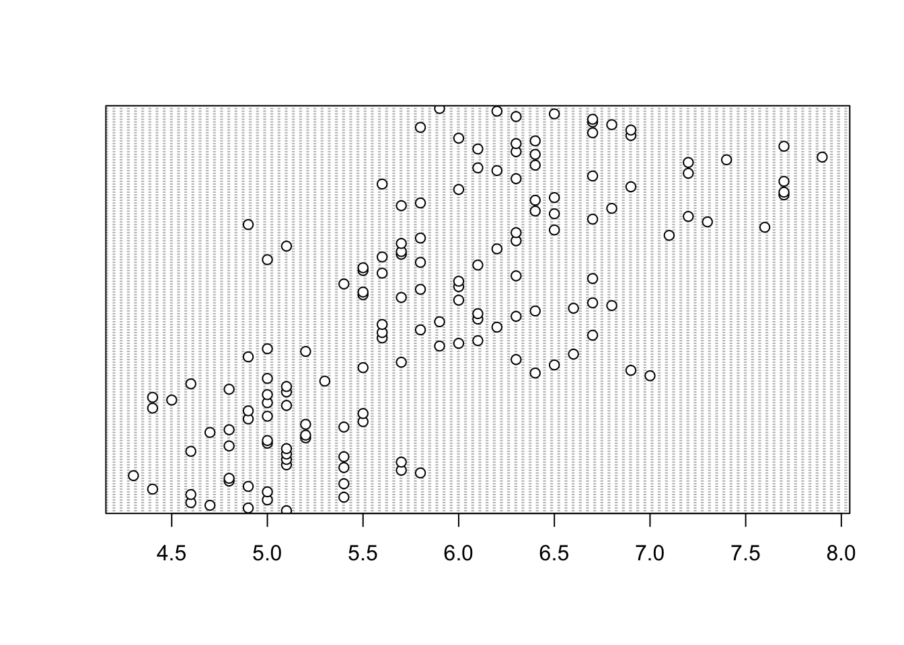
hist(iris$Sepal.Length)
Les graphiques dans R offrent de très nombreux paramètres (titre principal, titre des axes …)
boxplot(iris$Sepal.Length,main="Longueur des sépales",ylab="L(cm)",col="purple")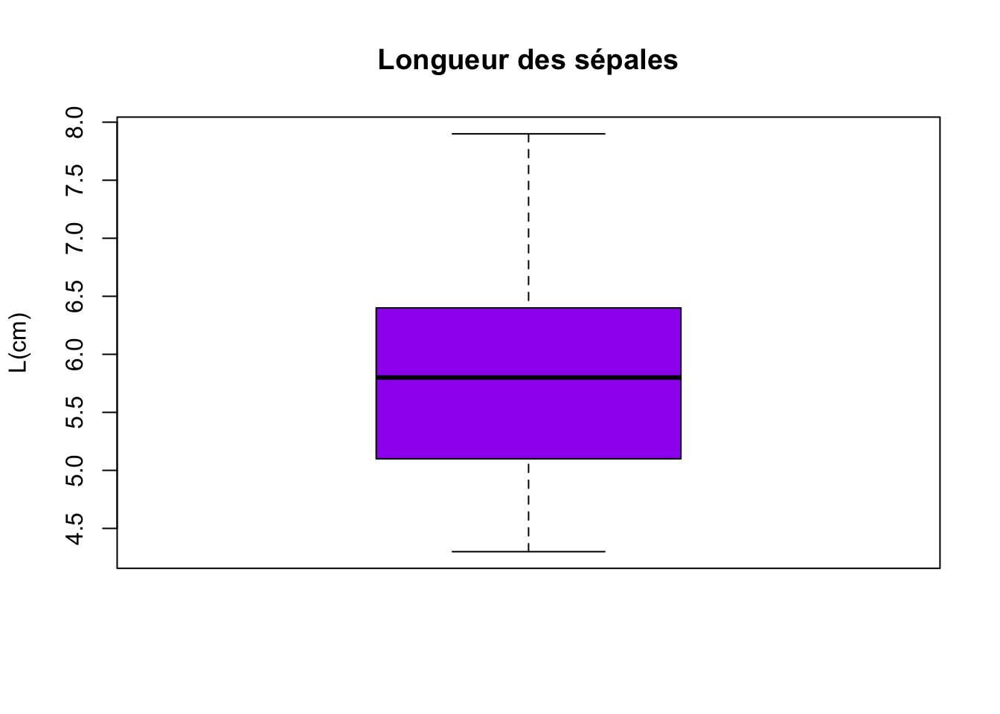
dotchart(iris$Sepal.Length,main="Longueur des sépales",xlab="L(cm)",col="purple",pch=15)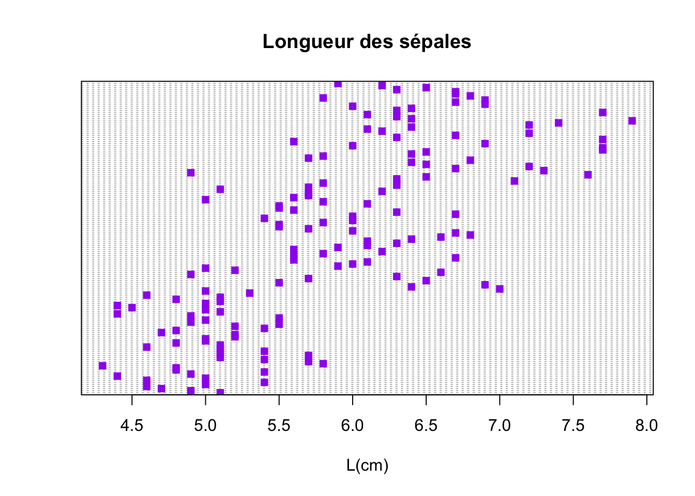
On peut également superposer plusieurs graphiques grâce à la fonction lines() qui permet de dessiner des lignes. Cette fonction devra toujours être précédée d’un graphique. lwd = épaisseur du trait, lty= type de ligne (continue, pointillés, …)
hist(iris$Sepal.Length,main="Longueur des sépales",xlab="L(cm)",col="purple",prob=T)
lines(density(iris$Sepal.Length),lwd=3,col=2,lty=2)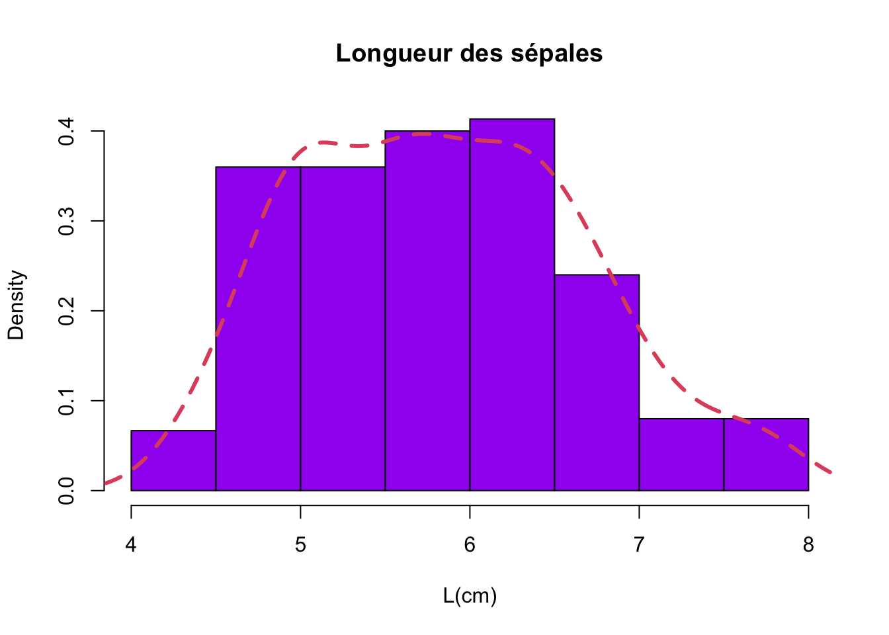
Graphiques pour les variables qualitatives.
On utilise principalement les deux types de graphiques suivants :
barplot (diagramme en bâtons),
pie (camembert ou diagramme circulaire).
barplot(table(iris$Species))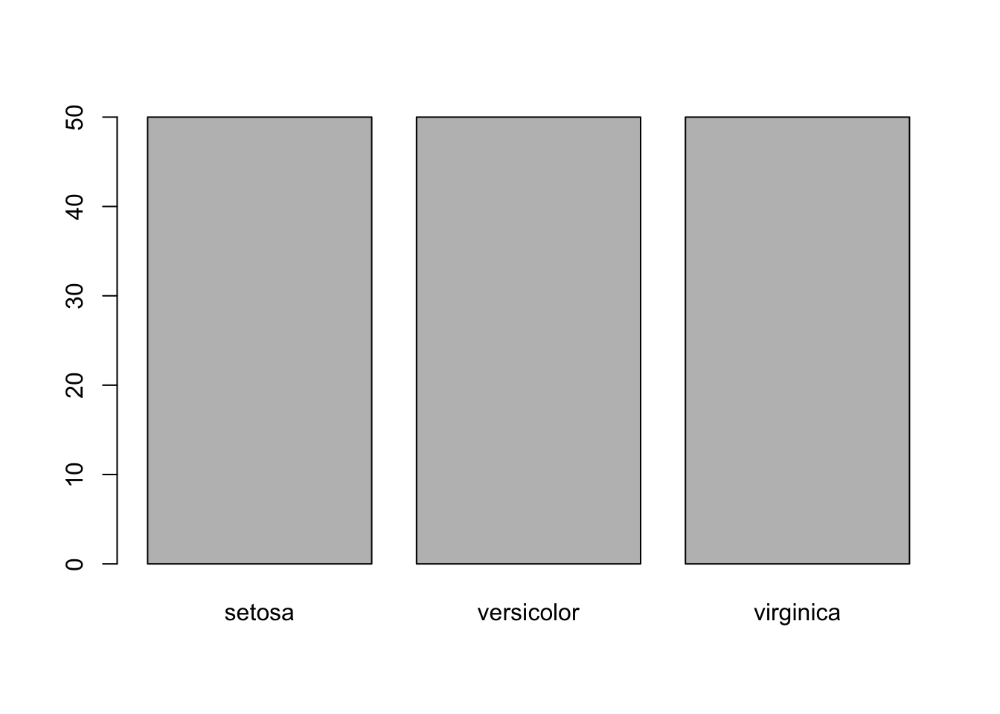
pie(table(iris$Species))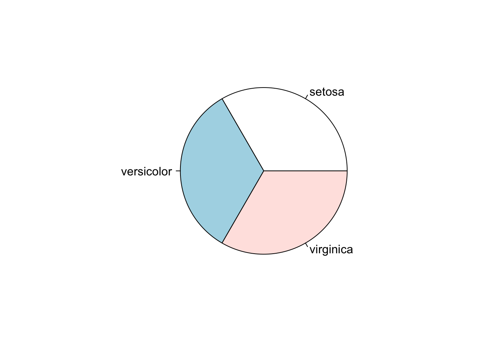
Cas bivarié
On veut représenter une variable en fonction d’une autre.
Une variable quantitative en fonction d’une qualitative
On veut représenter la longueur des sépales en fonction de l’espèce sur un boxplot :
boxplot(iris$Sepal.Length~iris$Species)ou bien en points par points (on va utiliser la couleur pour distinguer les espèces) :
dotchart(iris$Sepal.Length,col=iris$Species)
legend("bottomright",col=1:3,pch=rep(1,3),legend = levels(iris$Species),cex=0.5)Remarque : Pour la position de la légende c’est une association top ou bottom avec left ou right. Il faut également préciser le type de points avec pch et on peut gérer la taille de la légende avec cex.
On peut aussi faire plusieurs histogrammes. On va scinder la fenêtre graphique en plusieurs parties par(mfrow=c(v,h)) où v est le nombre de séparations verticales et h horizontales. Ici on a trois espèces d’iris donc on prend i=3 et j=1 :
par(mfrow=c(1,3))
hist(iris$Sepal.Length[iris$Species==levels(iris$Species)[1]],
main=paste("Pour l'espèce ",levels(iris$Species)[1]),
xlab="Longueur du Sépale",ylab="Fréquence")
hist(iris$Sepal.Length[iris$Species==levels(iris$Species)[2]],
main=paste("Pour l'espèce ",levels(iris$Species)[2]),
xlab="Longueur du Sépale",ylab="Fréquence")
hist(iris$Sepal.Length[iris$Species==levels(iris$Species)[3]],
main=paste("Pour l'espèce ",levels(iris$Species)[3]),
xlab="Longueur du Sépale",ylab="Fréquence")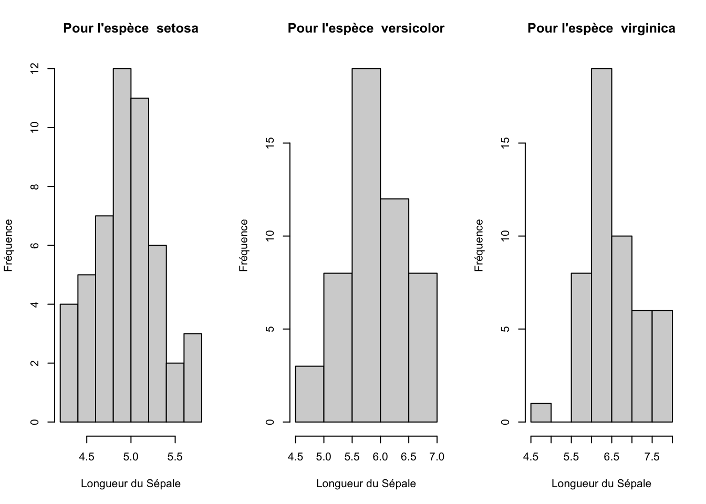
Une variable quantitative en fonction d’une autre variable quantitative
C’est la fonction plot qui permet de faire ce type de représentation.
On représente la longueur des sépales en fonction de leur largeur (width). Comme précédemment on peut colorer les points en fonction de l’espèce et ajouter une légende.
plot(iris$Sepal.Width,iris$Sepal.Length,col=iris$Species,pch=20,
xlab="largeur",ylab="longueur")
legend("topleft",legend=levels(iris$Species),col=1:3,pch=rep(20,3),cex=0.5)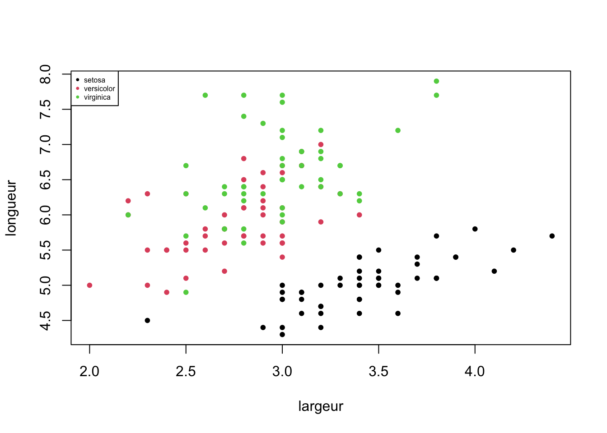
Une variable qualitative en fonction d’une autre variable qualitative
On va créer trois classes d’iris (colonne nommée class) en fonction de la longueur du sépale : petit (inférieur à 5), moyen (entre 5 et 6) et grand (au delà de 6). On utilise la fonction cut de R :
iris$class<-cut(iris$Sepal.Length,breaks = c(0,5,6,10))
iris$class<-factor(iris$class,labels=c("petit","moyen","grand"))On représente alors la table de contingence de la classe définie ci-dessus en fonction de l’espèce.
mosaicplot(table(iris$Species,iris$class),
color = 2:4,
main="répartition des classes en fonction des espèces")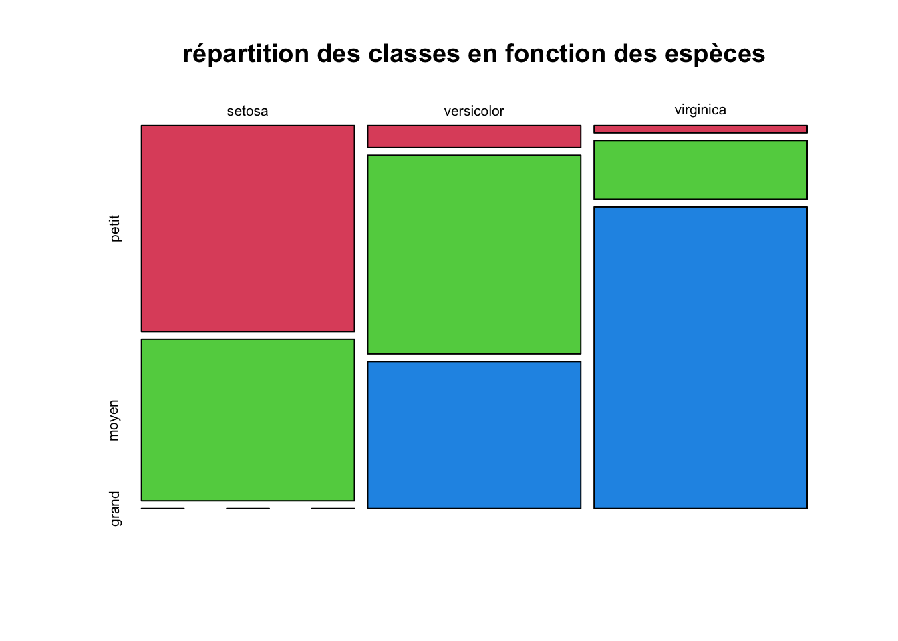
Exercices
Exercice 1 :
Télécharger le fichier temperat1.csv sur CONNECT puis ouvrez le dans RStudio (utiliser l’interface graphique), la première colonne correspondra aux noms des lignes du data.frame.
Premier travail : On veut reproduire le graphe suivant :
Voir la correction
temperat1 <- read.csv("~/Dropbox/ONIRIS/cours/EC552_IntroR/Cours BM VC/temperat1.csv", row.names=1, sep=";")
plot(temperat1$Lat,temperat1$Lon,type="n",xlab="Latitude",ylab="Longitude",main="Villes en fonction de leur latitude et longitude.")
text(temperat1$Lat,temperat1$Lon,rownames(temperat1))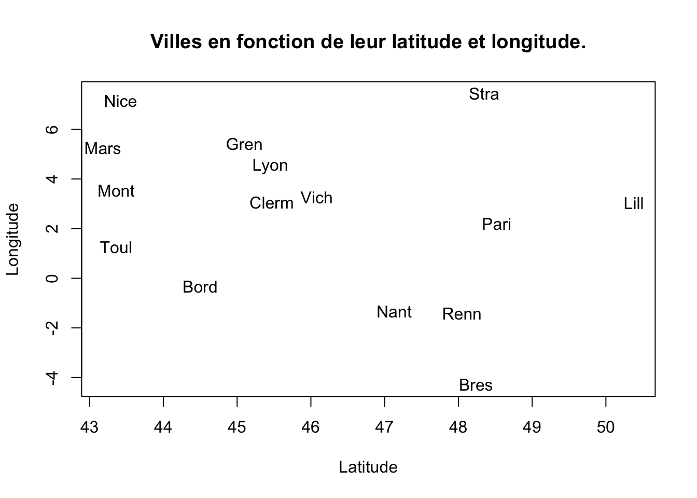
aide : pour ne pas avoir de points sur le graphe on utilise type=“n” et on utilise la fonction text() [voir l’aide de R].
Deuxième travail : Représenter les températures moyennes pour les trois villes : Nantes, Brest et Rennes.
Voir la correction
plot(1:12,temperat1[rownames(temperat1)=="Bres",1:12],xlab="Mois de l'année",
ylim=c(0,25),col=2,type="b",xaxt="n",ylab="Température")
axis(1,at=1:12,labels=colnames(temperat1)[1:12])
lines(1:12,temperat1[rownames(temperat1)=="Nant",1:12],col=3,type="b")
lines(1:12,temperat1[rownames(temperat1)=="Renn",1:12],col=4,type="b")
legend("topleft",legend=c("Brest","Nantes","Rennes"),col=2:4,lty=rep(1,3))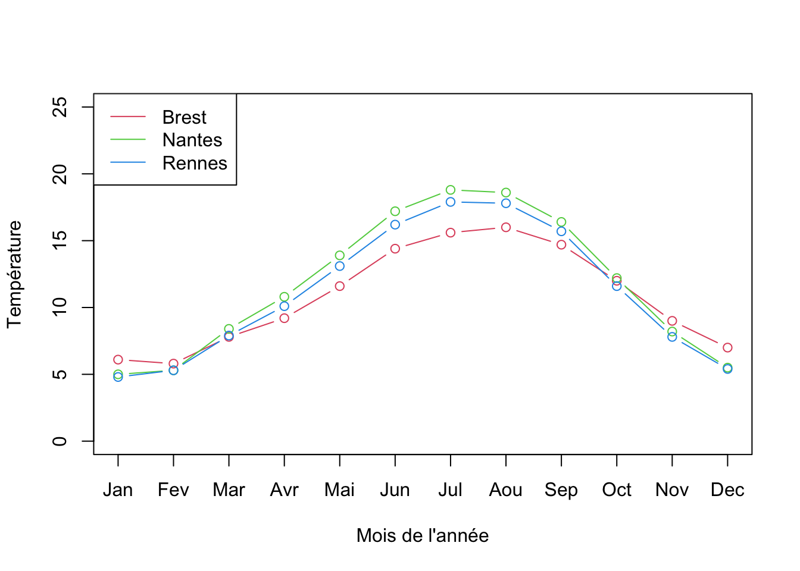
Pour mettre les mois en labels sur l’axe des abscisses on utilisera l’argument xaxt=“n” dans plot et ensuite on utilisera la fonction axis() voir l’aide de R. L’argument type=“b” pourra être utilisé dans plot et dans lines pour dessiner les points et les courbes.
Exercice 2 :
Télécharger sur Connect le fichier bordeaux1.csv et ouvrez le dans RStudio à l’aide de l’interface graphique. Les années seront utilisées pour nommer les lignes.
Il s’agit des données des vins de Bordeaux issues de “Méthodes statistiques en gestion” (M. Tenenhaus, Dunod, 1994).
On cherche à étudier l’éventuelle relation entre la qualité du vin et les variables météorologiques. Les variables sont les suivantes : TEMPERATURE : somme des températures moyennes journalières, SOLEIL : durée d’insolation, CHALEUR : nombre de jours de grande chaleur, PLUIE : hauteur des pluies, Y (QUALITE DU VIN) : 1 (Bon), 2 (Moyen), 3 (Médiocre).
- Faire les boxplot des variables température et pluie en fonction de la qualité du vin. Les deux graphes seront dans une même fenêtre. La ligne en pointillé horizontale représente la moyenne globale de la variable (voir fonction abline()). On reclassera les modalités de la variable qualité.
Voir la correction
bordeaux1$Y1<-factor(bordeaux1$Y1,levels=c("médiocre","moyen","bon"))
par(mfrow=c(1,2))
boxplot(bordeaux1$Temperature~bordeaux1$Y1,xlab="Qualité du vin",ylab="Temperature")
abline(h=mean(bordeaux1$Temperature),col=2,lwd=2,lty=2)
boxplot(bordeaux1$Pluie~bordeaux1$Y1,xlab="Qualité du vin",ylab="Pluie")
abline(h=mean(bordeaux1$Pluie),col=2,lwd=2,lty=2)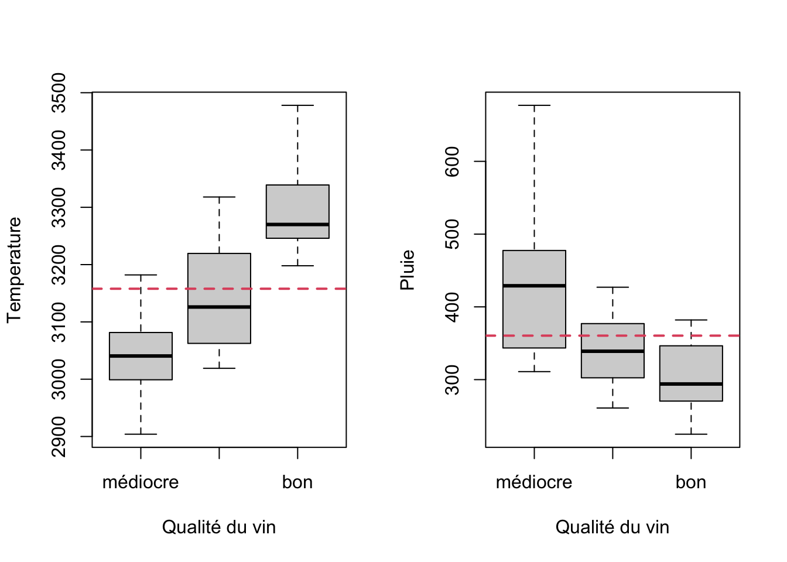
- Faire les 3 histogrammes de la variable chaleur en fonction de la qualité du vin dans une même fenêtre graphique. La droite verticale correspond à la moyenne globale.
#| code-fold: true
#| code-summary: "Voir la correction"
par(mfrow=c(1,3))
hist(bordeaux1$Chaleur[bordeaux1$Y1=="médiocre"],xlab="Temperature",ylab="Fréquence",main="Qualité médiocre")
abline(v=mean(bordeaux1$Chaleur),col=2,lwd=2,lty=2)
hist(bordeaux1$Chaleur[bordeaux1$Y1=="moyen"],xlab="Temperature",ylab="Fréquence",main="Qualité moyen")
abline(v=mean(bordeaux1$Chaleur),col=2,lwd=2,lty=2)
hist(bordeaux1$Chaleur[bordeaux1$Y1=="bon"],xlab="Temperature",ylab="Fréquence",main="Qualité bon")
abline(v=mean(bordeaux1$Chaleur),col=2,lwd=2,lty=2)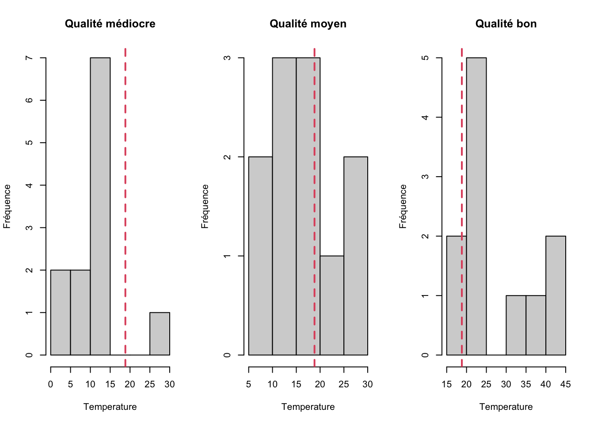
- Créer une variable pluie_quali qui correspondra à la variable PLUIE et dont les modalités seront :
Faibles lorsque la variable PLUIE sera inférieure à sa médiane
Fortes lorsque la variable PLUIE sera supérieure ou égale à sa médiane.
Dessiner la répartition de la qualité des vins en fonctions des deux modalités Faibles et Fortes.
Voir la correction
med<-median(bordeaux1$Pluie)
bordeaux1$pluie_quali<-factor(as.numeric(bordeaux1$Pluie>med),labels = c("Faibles","Fortes"))
mosaicplot(table(bordeaux1$Y1,bordeaux1$pluie_quali),col=3:2,main="Répartition de la qualité en fonction de la quantité de pluie")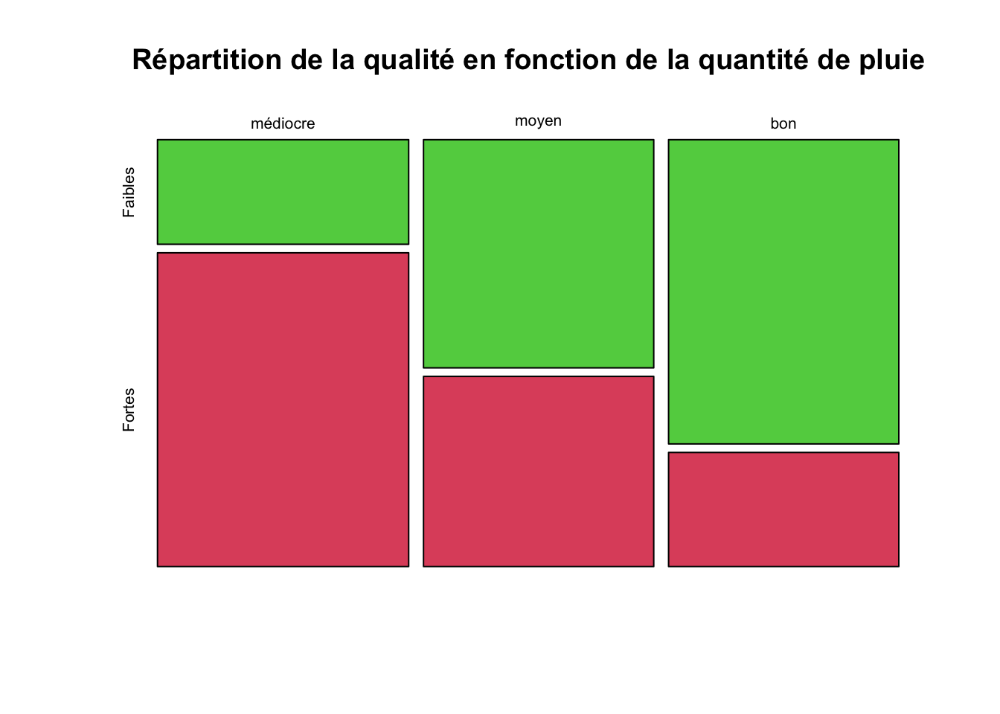
- Reproduire le graphique suivant
Voir la correction
bordeaux1 <- read.csv("~/Dropbox/ONIRIS/cours/EC552_IntroR/Cours BM VC/bordeaux1.csv", row.names=1)
plot(bordeaux1$Temperature,bordeaux1$Pluie,type="n",col=bordeaux1$Y,
main="Données climatiques associées aux vins",xlab="température",
ylab="pluie")
text(bordeaux1$Temperature,bordeaux1$Pluie,rownames(bordeaux1),col=bordeaux1$Y,cex=.5)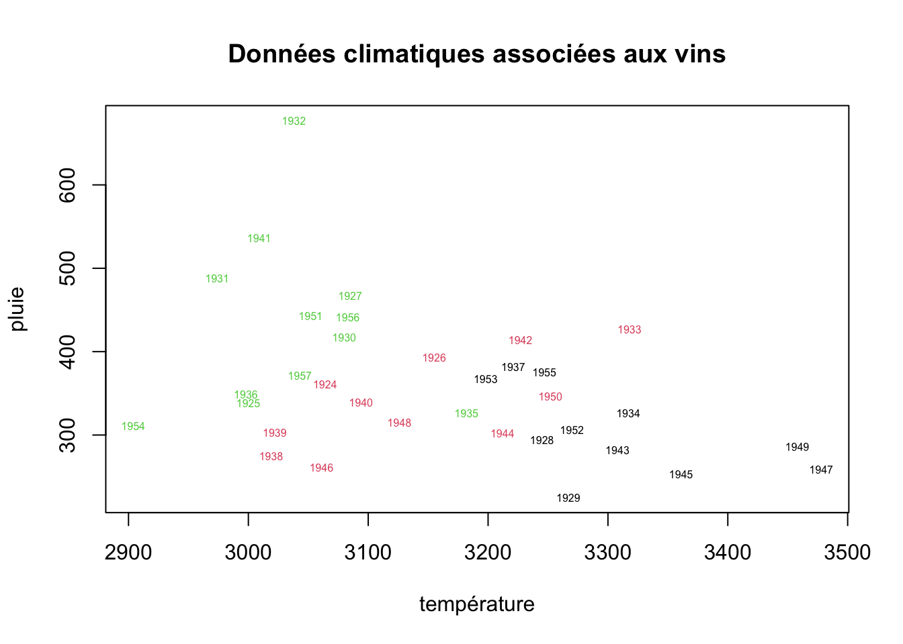